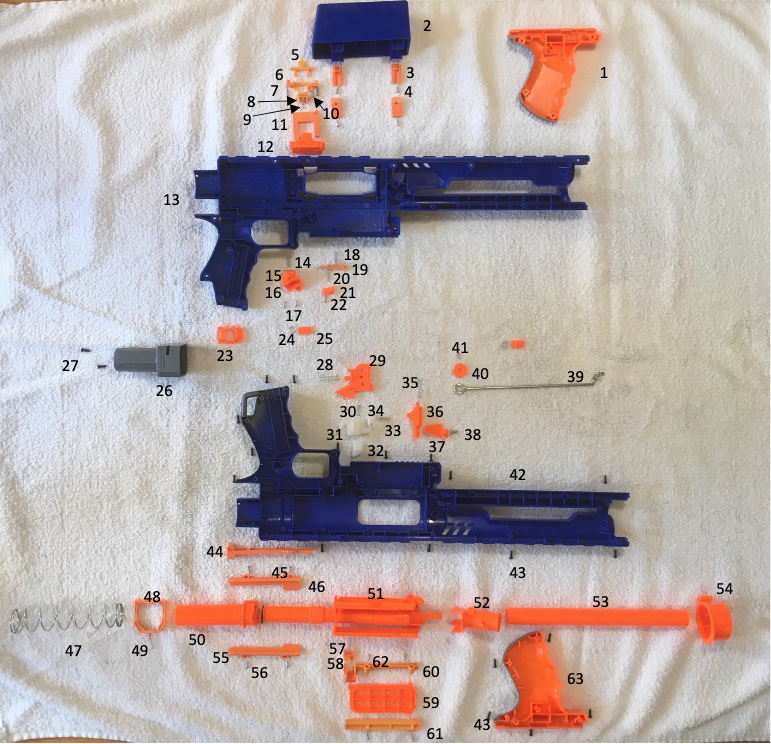
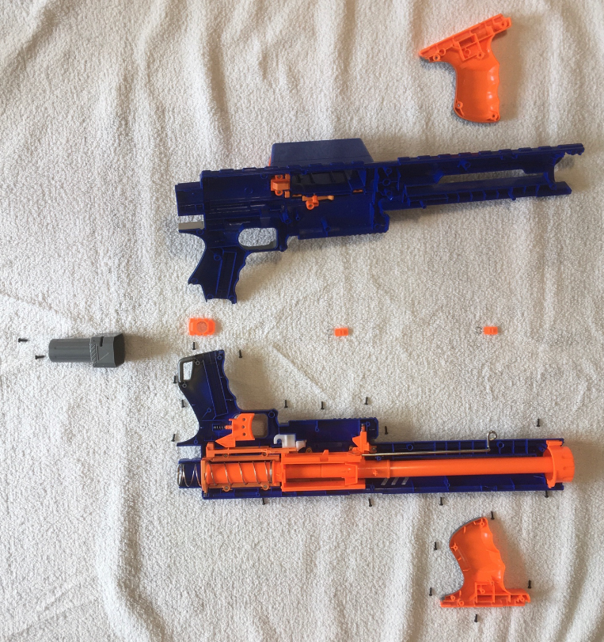

Introduction
Disassembling the Raider CS-35 Nerf Gun was the first teardown I took on independently. Earlier during that spring semester in my sophomore year at Tufts, I had walked through a formal teardown of an electric can opener with a team of 3 other students in our engineering design class. We disassembled and reassembled the product many times, compiled a bill of materials, modeled all the parts in Solidworks, compared the product with similar competing products, and then presented a final presentation on our analysis of the product. This month long process was much too intensive to be easily repeated on my own time, but it inspired me to disassemble and reassemble other manufactured products.
Exploded View of Raider CS-35 Nerf Gun
Notable Parts
- #1 & 63: Action Handle
- #2-22: Drum Loading Mechanism
- #13 & 42: Main Frame
- #28-29: Trigger
- #30-34: Unloaded Lock
- #35-38: Loaded Lock
- #39-41: Bolt Action
- #44: Trigger Lever
- #47: Firing Spring
- #48-49: Release Frame
- #50: Air Compression Chamber
- #51: Loading Chamber
- #52-53: Barrel
- #54: Muzzle
- #57-61: Loading Chamber Cover
Original Product
Cross-Sectional View of Nerf Gun With Internal Components Assembled

Fully Assembled Nerf Gun Product
Notes
The plastic parts appear to have been produced using an injection molding process given the high surface resolution and ejector pin markings. It was also interesting to note that all moving parts were somehow involved with a spring. The variety of actions that were made possible with springs alone was impressive.
The disassembly of this nerf gun was straightforward, requiring only some needle-nosed pliers and a 3 mm philips screwdriver.


Evidence of Ejector Pins
Slow Motion Video of Exposed Firing Mechanism
Interested in learning more about how a nerf gun works? I found this narrated animation on youtube to be a helpful resource as I tried to go about identifying part functionality during the teardown of the nerf gun.